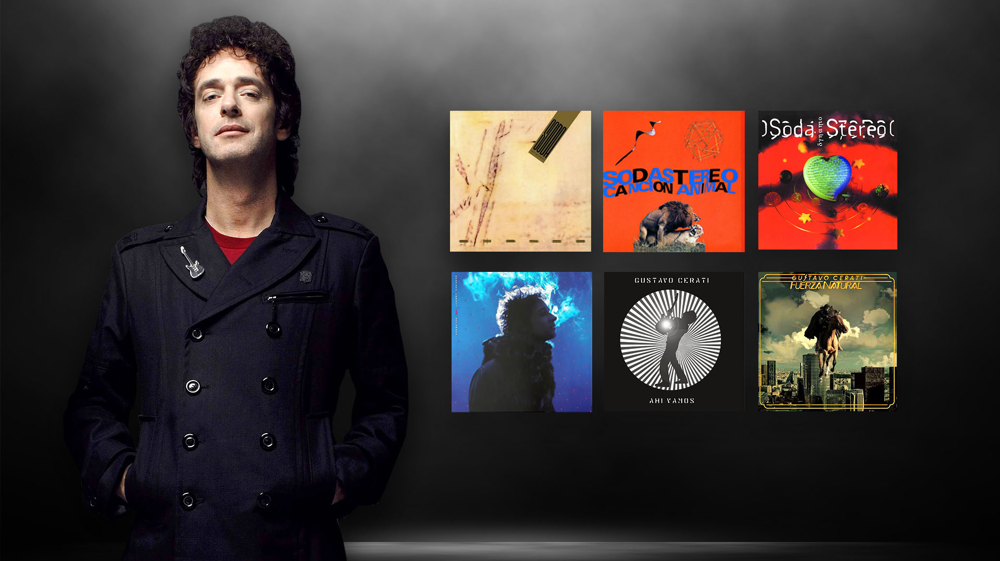

Discografía de Gustavo Cerati
A lo largo de su carrera, Gustavo Cerati dejó un inmenso legado musical, tanto liderando Soda Stereo como en su exitosa etapa solista.
Junto a Soda Stereo
La banda lanzó un total de 7 álbumes de estudio que marcaron un antes y un después en la escena del rock y pop local:
- Soda Stereo (1984)
- Nada Personal (1985)
- Signos (1986)
- Doble Vida (1988)
- Canción Animal (1990)
- Dynamo (1992)
- Sueño Stereo (1995)
Como Solista
Su carrera en solitario le permitió explorar distintos rumbos, desde el rock crudo hasta la música electrónica:
- Amor Amarillo (1993): Su primer disco, inspirado en su esposa, su vida en Chile y su hijo, Benito.
- Bocanada (1999): Un disco fuertemente influenciado por la música electrónica, el trip hop y el uso de samples.
- Siempre es Hoy (2002): Álbum extenso con un carácter más experimental.
- Ahí Vamos (2006): Marcó su regreso triunfal hacia un sonido de rock crudo impulsado por guitarras eléctricas.
- Fuerza Natural (2009): Su última producción, enfocada en un concepto de viaje con sonidos folclóricos, psicodélicos y espaciales.

Para visitar otras páginas: